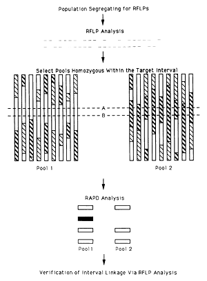
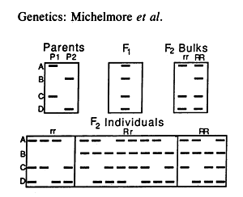
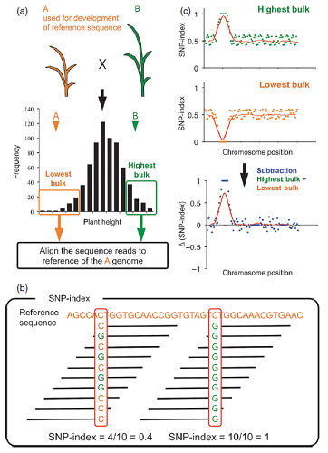

QTL-seq系列 | QTL-seq原理
QTL-seq是一种将Bulked‐segregant analysis (BSA)和高通量测序相结合，快速定位质量性状或数量性状主效QTL的方法[1]。
BSA方法最早使用RLFP或其他分子标记，分别在番茄中鉴定到果实脱落和成熟相关的基因组片段和标记[2]，在生菜中鉴定到和抗霜霉病基因连锁的分子标记[3]。


选取目标性状有差异的双亲构建的分离群体（RIL或F2），在分离群体中选取极端表型个体提取DNA并等量混合构建两个极端表型bulk pool，对混合DNA进行高通量测序（NGS）。同时应对至少其中一个亲本进行测序或其中一个亲本有参考基因组序列。随后进行变异分析，筛选出双亲间具有多态性的SNP位点（AA × BB）。分别计算两个bulk pool中每个SNP位点上某一亲本基因型read覆盖深度占该位点总read深度的比值，即SNP-index，两个bulk pool的SNP-index相减得到ΔSNP-index，为了减少测序和变异分析中出现的假阳性SNP位点的影响，采用滑窗统计的方法对ΔSNP-index进行平滑处理。将ΔSNP-index按照基因组位置画图，在基因组所有区域中，目标基因及其连锁的区域由于根据表型受到相反的选择在两个bulk pool中表现出不同的趋势，因此ΔSNP index会显著偏离0附近；另一方面，于目标形状无关的区域则两个bulk pool则表现为相似的变化趋势，因此ΔSNP index会在0附近波动。

完整代码
参考文献

- Takagi H, Abe A, Yoshida K, et al. QTL-seq: rapid mapping of quantitative trait loci in rice by whole genome resequencing of DNA from two bulked populations. Plant J. 2013;74(1):174-183. doi:10.1111/tpj.12105 ↩
- Michelmore RW, Paran I, Kesseli RV. Identification of markers linked to disease-resistance genes by bulked segregant analysis: a rapid method to detect markers in specific genomic regions by using segregating populations. Proc Natl Acad Sci U S A. 1991;88(21):9828-9832. doi:10.1073/pnas.88.21.9828 ↩
- Giovannoni JJ, Wing RA, Ganal MW, Tanksley SD. Isolation of molecular markers from specific chromosomal intervals using DNA pools from existing mapping populations. Nucleic Acids Res. 1991;19(23):6553-6558. doi:10.1093/nar/19.23.6553 ↩
QTL-seq系列 | QTL-seq原理
https://laowang2023.cn/2023/04/22/20230422-QTLseqMethod/